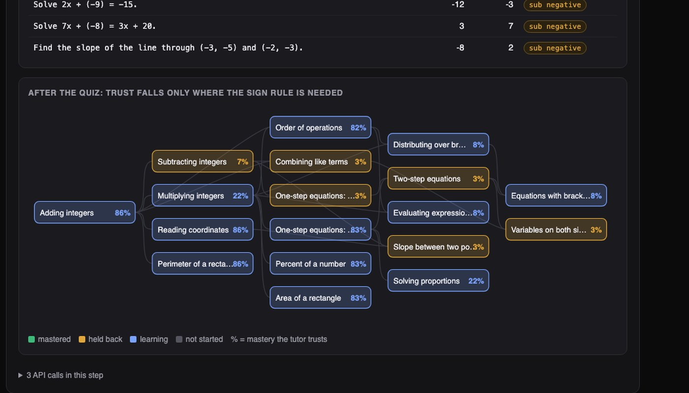
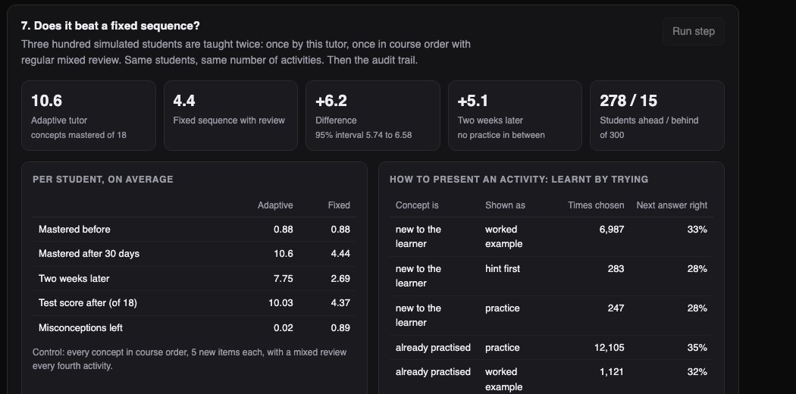

Python · Learning models · EdTech · 2026-10
What Should This Student Do Next?
A tutoring engine that tracks how well a learner knows each concept, spots when wrong answers follow a pattern, and picks the next activity. A simulated student who kept getting 'minus a negative' wrong was diagnosed from six answers and fixed in a day. Against a fixed lesson order, 300 simulated students mastered 10.6 concepts instead of 4.4.

Built from a written blueprint as one vertical slice. The students are simulated, and they learn and forget in the way the tutor's own model assumes, so the experiment shows the engine doing what it was designed to do, not that it helps real children. The 18-concept course and its hints were written by me for this project. No language model is used: the tutor only repeats lines from the course content. Not built: real learner data, free-text answers, teacher tools, Kafka, Terraform, single sign-on.
01 — The problem
Most learning software moves every student through the same lessons in the same order. But a student who believes that 7 - (-3) is 4 will fail every later topic that needs that rule, and more practice on those later topics will not help. Can software work out what a student actually knows, find the misunderstanding underneath the wrong answers, and choose what they should do next?
Blueprint 7 of ten in a second build book, built as its demo scenario end to end.
02 — What I built
A Python service on PostgreSQL with a web page, started by one docker compose up.
- A course map: 18 pre-algebra concepts and what each depends on.
- Practice items generated with computed answers, plus the wrong answer each known misconception would give.
- A learner model: a probability of mastery per concept, and of each misconception.
- A policy: fix a misconception, review what is fading, or teach what the learner is ready for.
- A simulator of students, to test the whole thing.
03 — How it was built
- 01
Run the mistake as a rule
For each item the generator also computes what a known misconception would answer. For Solve x + (-2) = 7 the right answer is 9; a student who treats "minus a negative" as "minus" says 5. So a wrong answer of exactly 5 is evidence of that misconception, and a wrong answer of 12 is not.
if a < 0: bugs["sub_negative"] = b - abs(a) - 02
Update two beliefs after every answer
One belief is how likely the student has mastered the concept. The other is how likely they hold each misconception: it jumps when the answer is exactly the "buggy" one and falls when they get such an item right. In the placement quiz the simulated student gave six sign-error answers and the belief went to 99%. A bug I hit: stored in the database it rounded to exactly 100%, and a belief of 100% can never be revised, so the tutor kept re-teaching a student who had already got it. Beliefs are now capped at 99%.
state["m"][m] = min(0.99, max(0.01, prior * held / (prior * held + (1 - prior) * free))) - 03
Lower trust only where it matters
A suspected misconception pulls down the tutor's trust in the concepts that depend on that skill, and only those. After the quiz, six concepts (subtracting integers, slope, three kinds of equation, like terms) show as held back. Coordinates, percent and area are untouched.
for m in cu.EXPOSES[key]: out *= 1 - IMPACT * state["m"][m] - 04
Choose the next activity by priority
First: fix a misconception that is at least 60% likely. Second: review any concept whose estimated recall has dropped under 85% (memory is modelled as fading with a half-life that doubles after each successful review a day or more later). Third: teach the concept the student is ready for that unlocks the most later ones.
return state["p"] * 0.5 ** (days_since / half_life) - 05
Test on students I can see inside
Simulated students have a hidden true state, so the tutor's beliefs can be checked. It predicted the next answer far better than "how often has this student been right so far" (0.79 against 0.55, where 0.5 is guessing). And 300 students taught both ways ended 6.2 concepts apart. I report that with a warning: I wrote both the students and the tutor, and they share the same idea of how learning works.
"caveat": "The students are simulated, and they learn and forget in the way the tutor's model assumes ..."
04 — Results
The demo student: 7 of 18 on the placement quiz, with 6 wrong answers matching the sign error. Five targeted items on day 1 took the tutor's belief in the misconception from 99% to 20%. By day 14 the student had really mastered 13 concepts, up from 8.

300 simulated students, 30 days, the same 120 activities each:
| Adaptive | Fixed order | |
|---|---|---|
| Concepts mastered | 10.6 | 4.4 |
| Two weeks later | 7.8 | 2.7 |
| Misconceptions left | 0.02 | 0.89 |
The fixed order includes a mixed review every fourth activity, so it is not a straw man, but it never targets a misconception, and in this simulator that is most of the gap.
Checks. 48 tests, including: 5,400 generated items whose answers are re-computed independently, a belief that can always be revised, a retried answer counted once, and one school unable to see another's learners. A flaky test also exposed that my simulation gave slightly different results on each run (Python iterates sets in a random order); it is now reproducible.
05 — What I'd do next
- Real learner logs (ASSISTments), where the model's assumed rates would have to be fitted and would do worse.
- Item difficulty, which this model ignores.
- A teacher's view, and a way for a teacher to overrule a diagnosis.